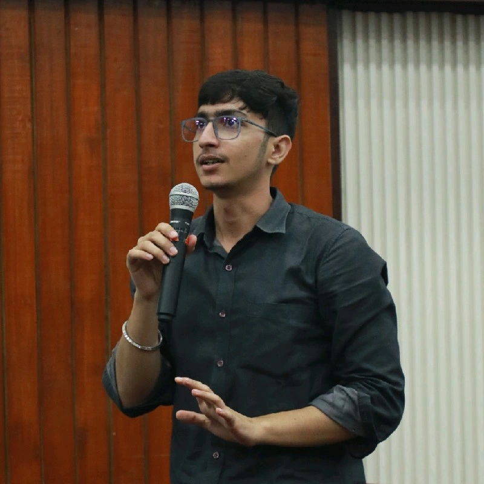

Network Intrusion Detection System
Real-time network monitoring, intrusion detection, alert generation, logging and packet analysis.
Explore →Build with curiosity. Improve with intention.
About
I’m a Computer Science undergraduate with hands-on experience across software development, quality assurance, data analytics, product evaluation, and project coordination.
I enjoy moving through the software lifecycle — building and implementing applications, testing systems, analyzing data, and improving user and product experiences.

Toolkit
Selected work
Real-time network monitoring, intrusion detection, alert generation, logging and packet analysis.
Explore →A DistilBERT-based NLP classification pipeline built end-to-end from preprocessing to evaluation.
Explore →An interactive stock technical-analysis dashboard using real-world market data and indicators.
Explore →Journey
Functional, UI, responsive and cross-browser testing across 10+ web modules, with structured defect reporting and regression validation.
Collaborated on a Python-based Network Intrusion Detection System for traffic monitoring and threat detection.
Right now
Strengthening problem solving and core engineering foundations.
Building practical systems, dashboards, and applications while learning through implementation.
Exploring modern AI applications and backend API development through hands-on work.
Beyond code
Reading, fitness, walking, meditation, learning, and thoughtful conversations.